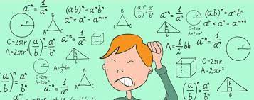

Numerikus módszerek és optimalizálás tematika:
- Egyenletmegoldási módszerek. Esettanulmányok.
- Lineáris egyenletrendszerek megoldási módszerei. Esettanulmányok.
- Görbék illesztése. Esettanulmányok.
- Numerikus deriválás és integrálás. Esettanulmányok.
- Közönséges differenciálegyenletek numerikus megoldási módszerei. Esettanulmányok.
- Optimalizálási feladatok csoportosítása, bevezető példák.
- Egydimenziós, feltétel nélküli optimalizálási módszerek.
- Többdimenziós feltétel nélküli optimalizálási módszerek.
- Feltételes optimalizálási feladatok
- Lineáris programozás
- A dualitás problémaköre
- Speciális LP problémák
- Nemlineáris optimalizálás
- Optimalizáló szoftverek
|

|